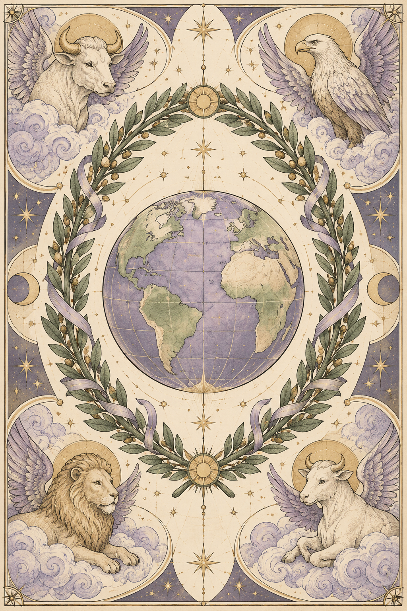
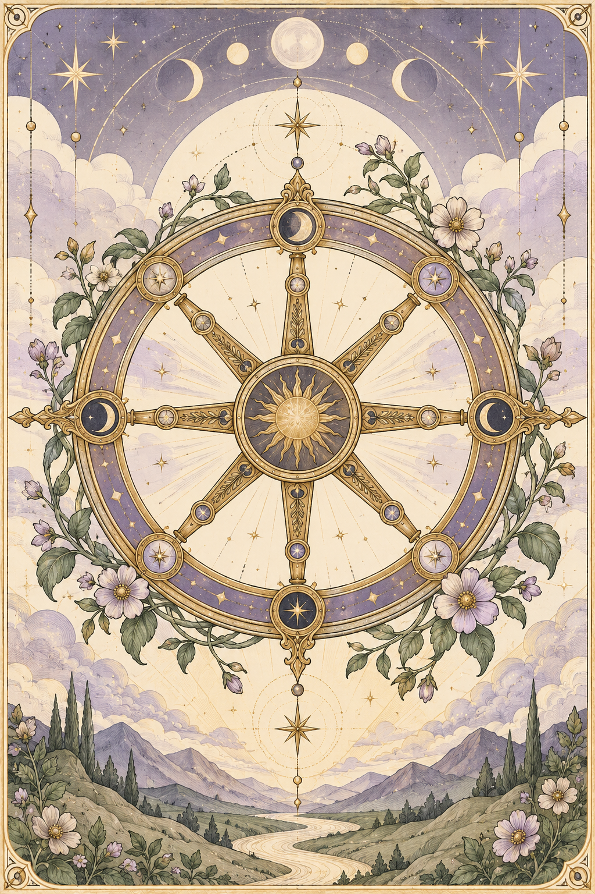
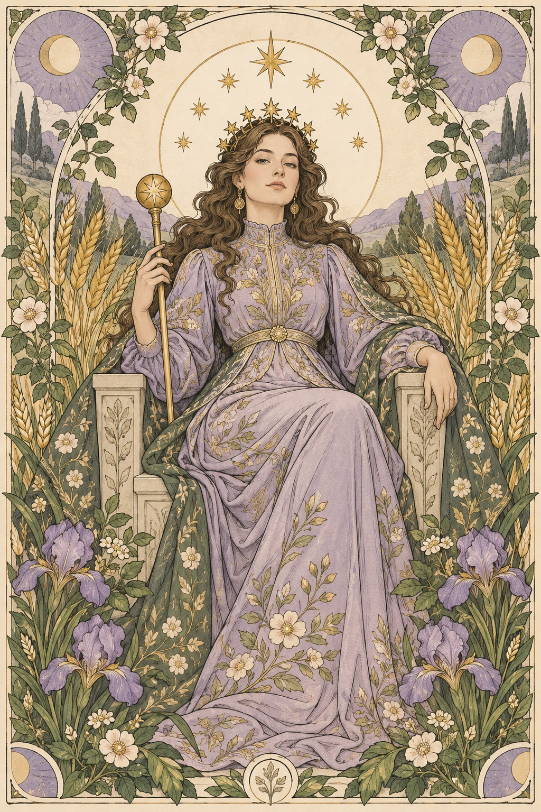
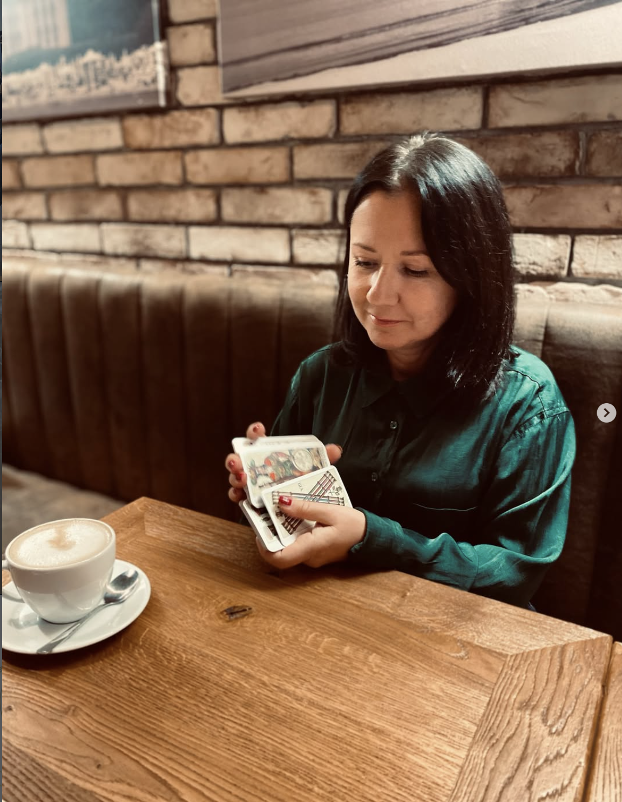

Отношения
Когда хочется лучше понять происходящее в личной жизни или дружбе.
Меня зовут Виктория. Более пяти лет я работаю с картами Таро. Вместе мы разбираем ваш вопрос, рассматриваем возможные варианты — а выбор остаётся за вами.



01 / Ваш запрос
На консультации мы разбираем ваш вопрос и рассматриваем возможные варианты решения.
Когда хочется лучше понять происходящее в личной жизни или дружбе.
Смена работы, профессии, обучение или решение о своём деле.
Переезд, покупка или продажа жилья, выбор между вариантами.
Сильные стороны, способности и темы, которые хочется исследовать глубже.

02 / Знакомство
Я работаю с Таро более пяти лет. На консультации мы сначала уточняем ваш вопрос, а затем рассматриваем ситуацию со стороны.
В работе использую разные колоды; чаще всего — Марсельское Таро. Ещё провожу разборы по нумерологии и методу «Матрица Судьбы».
Итоговый выбор всегда остаётся за вами.
03 / Форматы
Стоимость зависит от формата и объёма запроса.
Чтобы рассмотреть ваш вопрос или выбор с нескольких сторон.
Разбор личности, сильных сторон и важных для вас тем.
Объёмный разбор по дате рождения или отдельная тема, например отношения или финансы.
Расклад Таро с ответом на один вопрос: фото расклада и описание за 5 €. Мини-консультации обсуждаются индивидуально.
Задать вопрос04 / Как проходит
Начните разговор в удобном мессенджере.
Рассказываете своими словами, с чем хотите обратиться.
Мы определяем тему, подходящий формат и объём работы.
Я называю стоимость и способ оплаты до начала консультации.
После оплаты договариваемся о дне и времени.
05 / Перед обращением
После короткого знакомства я уточняю ваш вопрос. Затем мы выбираем формат: звонок, видеозвонок либо фото или видео расклада с голосовым объяснением.
Обычно 45–60 минут. Продолжительность зависит от количества вопросов.
Да. Расклад Таро с ответом на один вопрос: фото расклада и описание — 5 €.
Для нумерологического разбора нужны дата рождения и ФИО, указанные в свидетельстве о рождении. Как их передать, договоримся лично.
06 / Следующий шаг
Напишите несколько слов о том, что сейчас важно. Вместе выберем подходящий формат консультации.
Выберите удобный мессенджер
Переходы в мессенджеры пока не подключены.